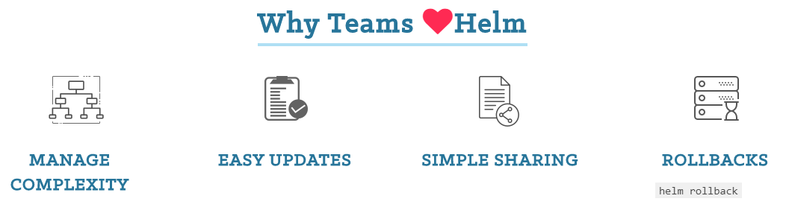

Hand-on session
DODAS generated Spark cluster
Contact: diego.ciangottini<at>pg.infn.it
Markdown version of this presentation can be found here
Big Data Analytics
9-12 Dic. 2019, Bologna
Presenter Notes
Presentation keyboard shortcut
- Press
hto toggle display of help - Press
left arrowandright arrowto navigate - Press
tto toggle a table of contents for your presentation. Slide titles are links - Press
ESCto display the presentation overview (Exposé) - Press
nto toggle slide number visibility - Press
eto make slides filling the whole available space within the document body
Presenter Notes
Overview
- Objective recap
- Deploy your own Spark cluster with Dodas
- How to template applications with Helm
- Simple function example
- Get to know user interfaces for Spark on Dodas
- Experimenting base features
- Debugging
Presenter Notes
K8s on DODAS

Presenter Notes
Spark on DODAS
Client mode with Jupyter notebook

You see here Helm as a tool for templating applications on K8s. We will take a look at this later after we start the deployment (sorry time reason)
At the end we wiil also see an example of job submission in cluster mode
Presenter Notes
Setup architecture: recap
-
1 Master pod:
- Spark driver
- Jupyter
-
Services:
- Jupyter
- Spark webUI
- K8s dashboard
-
At notebook python Kernel start:
- 2 executor pods
Directly from the notebook is also possible to stop the current spark context and to reload a new one with different executors.
Presenter Notes
Question time 1.
Presenter Notes
Let's start our deployment
Download the Hands-on repo
git clone https://github.com/DODAS-TS/HandsOnSparkDODAS2019.git
cd HandsOnSparkDODAS2019
Copy your DODAS configuration template
cp templates/dodas_template.yaml ~/.dodas_template.yaml
Presenter Notes
Quick look at DODAS client configuration
cloud:
id: ost
type: OpenStack
host: https://horizon.cloud.cnaf.infn.it:5000/v3
username: iam-demo
password: token_template
tenant: oidc
auth_version: 3.x_oidc_access_token
service_region: regionOne
auth_url: "https://horizon.cloud.cnaf.infn.it:5000"
im:
id: im
type: InfrastructureManager
host: https://im-demo.cloud.cnaf.infn.it/infrastructures
token: token_template
Presenter Notes
Retrieve you access token from IAM
Import the pre-configured client for the demo
export IAM_DEVICE_CODE_CLIENT_ID=7b50c794-c45a-45ad-906f-83cb18e36a5d
export IAM_DEVICE_CODE_CLIENT_SECRET=AJTXpc_Mo4ZgtcO7cT5CYYFHEQbeaV5IVYTiU4YQFoHyDMYZWiDPqvgmWLSV6ryBfF-HVbzLujPpgemifvVWcTY
Retrieve the token
Simply run and follow the instructions:
./scripts/get_token.sh
Check $HOME/.dodas.yaml file correctly filled
cat ~/.dodas.yaml
Presenter Notes
Install DODAS client
Documentation
You can find a quick start guide and reference guide here
Download the binary
wget https://github.com/Cloud-PG/dodas-go-client/releases/download/v0.3.0/dodas.zip
unzip dodas.zip
Test the installation
./dodas --version
Presenter Notes
Deploy your cluster
Get TOSCA template
less templates/spark_template.yml
Presenter Notes
Question time 2.
Presenter Notes
Deploy the cluster
Validation
You can check for an error in your templates with dodas validate command
./dodas validate --template templates/spark_template.yml
Launch the deployment
$ ./dodas create templates/spark_template.yml
Using config file: /home/centos/.dodas.yaml
validate called
Template OK
Template: templates/spark_template.yml
Submitting request to : https://im-demo.cloud.cnaf.infn.it/infrastructures
InfrastructureID: c8a7a544-1bee-11ea-a67e-0242ac160003
Check the status of the vm configuration
Checking the status of configuration on master node:
$ ./dodas get status vm c8a7a544-1bee-11ea-a67e-0242ac160003 0
Presenter Notes
Time for Helm... in a nutshell
Presenter Notes
Helm: introduction exercise
While the deployment goes, let's setup a local playgroud to understand how the K8s templating works with HELM.
- Knowing the tool
- How you can develop and test a chart
- A look at Dodas spark chart
Presenter Notes
What's Helm 1/2
Helm helps managing Kubernetes applications through a standard templating. The latest version of Helm is maintained by the CNCF - in collaboration with Microsoft, Google, Bitnami and the Helm contributor community. For this hands on we will use the v2 though, since DODAS is currently in the middle of the migration from v2 to v3.

Presenter Notes
What's Helm 2/2
On HelmHub you can find by yourselves the motivation of adopting a widely adopted template format.
Helm uses a packaging format called charts. A chart is a collection of files that describe a related set of Kubernetes resources. A single chart might be used to deploy something simple, like a memcached pod, or something complex, like a full web app stack with HTTP servers, databases, caches, and so on.
Presenter Notes
Install Helm and local k8s
Let's setup our local cluster with 2 fake nodes that will be our dev environment:
# Install k8s cli
curl -LO https://storage.googleapis.com/kubernetes-release/release/`curl -s https://storage.googleapis.com/kubernetes-release/release/stable.txt`/bin/linux/amd64/kubectl
chmod +x kubectl
# Install k8s in docker
curl -Lo ./kind https://github.com/kubernetes-sigs/kind/releases/download/v0.6.1/kind-$(uname)-amd64
chmod +x ./kind
# deploy the playground
./kind create cluster --config templates/kind_cluster_config.yml
# install helm client
curl https://raw.githubusercontent.com/helm/helm/master/scripts/get-helm-3 | bash
Check that everything is working with:
$ ./kubectl get node
NAME STATUS ROLES AGE VERSION
kind-control-plane Ready master 3m55s v1.16.3
kind-worker Ready <none> 2m36s v1.16.3
kind-worker2 Ready <none> 2m36s v1.16.3
Presenter Notes
Simple example
Init your chart
# Create a defualt chart
helm create myfirstchart
# Remove standard templates
rm -rf myfirstchart/templates/*
Chart folder tree
Charts are created as files laid out in a particular directory tree, then they can be packaged into versioned archives to be deployed.
myfirstchart/
Chart.yaml # A YAML file containing information about the chart
LICENSE # OPTIONAL: A plain text file containing the license for the chart
README.md # OPTIONAL: A human-readable README file
values.yaml # The default configuration values for this chart
templates/ # A directory of templates that, when combined with values,
# will generate valid Kubernetes manifest files.
templates/NOTES.txt # OPTIONAL: A plain text file containing short usage notes
Presenter Notes
Helm: "chart up" your application
Deployment template
apiVersion: apps/v1
kind: Deployment
metadata:
name: lookup-deployment
spec:
replicas: 1
template:
metadata:
labels:
app: {{ .Values.appName }}
spec:
containers:
- name: lookup-container-deployment
image: dciangot/lookup
ports:
- containerPort: 80
env:
- name: SIMPLE_SERVICE_VERSION
value: "1.0"
resources:
limits:
memory: "64Mi"
cpu: "500m"
- name: probe-container
image: dciangot/probe
selector:
matchLabels:
app: {{ .Values.appName }}
Presenter Notes
Service template
apiVersion: v1
kind: Service
metadata:
name: simpleservice
spec:
ports:
- port: {{ .Values.servicePort }}
targetPort: 80
selector:
app: {{ .Values.appName }}
Value file
In values.yaml we can now put our deployment variables:
servicePort: 30080
appName: myApp
Presenter Notes
Install your Helm chart on the cluster
$ helm install mychart ./myfirstchart
NAME: mychart
LAST DEPLOYED: Wed Dec 11 09:02:50 2019
NAMESPACE: default
STATUS: deployed
REVISION: 1
TEST SUITE: None
One can also verified the manifest that has been actually submitted to k8s with:
helm get manifest mychart
You should see that the parameters in the templates should be filled with the values we passed on values.yaml file.
Presenter Notes
Verify the deployments
$ ./kubectl get pod
NAME READY STATUS RESTARTS AGE
lookup-deployment-64dd5568bc-6dft5 2/2 Running 0 49s
Publish the chart
Charts can then be exposed for external reuse creating repositories with various methods described here
Presenter Notes
Question time 3.
Presenter Notes
Spark HELM chart
A look at need values
Spark:
Path: /opt/spark
externalIP:
enabled: true
ip: {{ externalIP }}
Master:
Name: master
Image: cloudpg/spark-py
ImageTag: dodas-2.4.3-bigdl
Replicas: 1
Component: spark-master
Cpu: 100m
Memory: 1024Mi
ServicePort: 7077
ContainerPort: 7077
# Set Master JVM memory. Default 1g
# DaemonMemory: 1g
ServiceType: ClusterIP
Jupyter:
NodePort: 30888
WebUi:
Name: webui
ServicePort: 8080
ContainerPort: 8080
NodePort: 30808
Presenter Notes
More details
Find the whole chart tree in templates/helm/spark
And the spark image for Kubernetes resource manager here
Presenter Notes
Question time 4.
Presenter Notes
Time to play with DODAS Spark cluster
Retrieve again the token
Check the status of the deployment
By now you should see something like:
$ ./dodas get status vm c8a7a544-1bee-11ea-a67e-0242ac160003 0
...
...
TASK [cloud-pg.ansible_role_helm : Helm install chart cloudpg/spark] ***********
Wednesday 11 December 2019 08:35:44.102069
changed: [131.154.96.135_0]
PLAY RECAP *********************************************************************
131.154.96.135_0 : ok=4 changed=4 unreachable=0 failed=0
131.154.96.135_0 : ok=4 changed=4 unreachable=0 failed=0
Task helm_spark_conf_k8s_master_server finished successfully
Process finished
If not, don't worry, we got a backup solution at 131.154.96.222:30888
Presenter Notes
Kubernetes Web-UI
The UI should be now exposed on the port 30443 of you master node e.g. https://<your master IP>:30443
Spark Web-UI
The UI should be now exposed on the port 30443 of you master node e.g. https://<your master IP>:30808
Log into the k8s master
You are also able to log into the master retrieving access information with the dodas client:
./dodas get vm c8a7a544-1bee-11ea-a67e-0242ac160003 0
Just save the prompted private key and login with cloudadm user
Presenter Notes
Question time 5.
Presenter Notes
Using Jupyter
Jupyter is accessible at http://<your master IP>:30888 with the password testme
Load the exercise notebook
You should be able now to import the exercise notebook in templates/spark_notebook.ipynb with the upload button and to start its kernel.
Check the executor pods appearing
In the k8s web ui you should see now 2 additional pods appearing as the spark shell have been started by the kernel automatically creating a pool of executor.
The number and size of executors can be tuned both at TOSCA level and directly from Jupyter as you can find the in the example playbook provided.
Presenter Notes
Question time 6 and the last one :)
Presenter Notes
Destroy the cluster
Just retrieve the token again and then do:
./dodas destroy c8a7a544-1bee-11ea-a67e-0242ac160003
Presenter Notes
Finally, what about lego composition?
Let's take a look at how you can leverage the DODAS stack and compose different application.
In templates/spark_minio_template.yaml you can find an example where the setup you just made with an S3 object storage using MINIO.
The chart relative to Minio installation is here